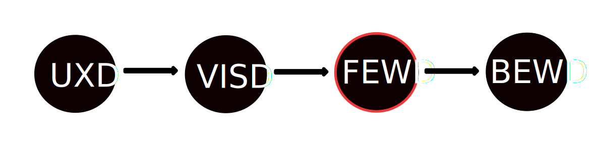

CODING 101: HTML + CSS
Evan Wallace
Senior Software Developer - Berkley Insurance Australia
CODING 101: HTML + CSS
LEARNING OBJECTIVES
- Gain an overview of the web development landscape and where HTML/CSS fits in the web ecosystem.
- Describe the difference between front-end and back-end code and the basic components of HTML, CSS, and
Javascript.
- Use HTML and CSS to mark up a basic webpage.
- Describe the different jobs that use coding or benefit from an understanding of HTML/CSS.
- Describe the various opportunities to continue learning web-development.
HOW DOES THE WORLD WIDE WEB WORK?
SO, WHATS WEB DEVELOPMENT?
What's Web Development?
-
The creation and management of both websites and web-based applications
-
Made up of the Front End and Back End
-
Mainly involves editing text files and making sure things are in the right places
web production workflow

-
Take the design and turn it into code and assets.
-
Uses HTML/CSS to create the structure for a page and add styles.
-
Add interactions with Javascript.
-
Other responsibilities: accessibility, performance, cross-browser, offline first and cross-device functionality.
what does front end even mean?
“A mix of programming and layout that powers the visuals and interactions of the web.”
in summary...
-
The Front End is what the user sees
-
It powers the visuals and interactions of the web
-
Made up of HTML, CSS and Javascript
-
Is constantly evolving. Trends and styles come in and out of fashion.